AI
6 topics
ＡＩで生成した画像や動画、ＥＵが識別できる表示義務づけ…違反なら最大２７億円か年売上高３％の制裁金
注目ポイント注目度 70点
EU、生成AIコンテンツに識別表示義務 禁止行為なら制裁金63億円
注目ポイント注目度 70点
中国AI『Kimi K3』がGPT超え…米AI株急落 研究者「ムーンショットが非常に頑張った」米中覇権争いの中、サイバー攻撃を「中国AIで防御する」事態も（ABEMA TIMES）
中国AI『Kimi K3』がGPT超え…米AI株急落 研究者「ムーンショットが非常に頑張った」米中覇権争いの中、サ…
注目ポイント注目度 67点
数学と理論計算機科学における10の進展
注目ポイントOpenAI｜注目度 65点
株式会社Shinker、AI検索・LLMO分析ツール「AIRA Score」を正式リリース。ChatGPT・Google AI Overview時代のWebサイト診断を格安で提供 月額9800円
株式会社Shinker、AI検索・LLMO分析ツール「AIRA Score」を正式リリース。ChatGPT・Goo…
注目ポイント注目度 61点
OpenAIはChatGPTが著名な作家の文体を模倣することを禁止しています
注目ポイント注目度 61点
IT業界
6 topics
サイバー攻撃の動向と対策学ぶ 浜松東署など事業所対象に講演
注目ポイント注目度 67点
Google EarthのNano Banana画像生成、フェイク対策のため開始1日で停止
Impress Wat…
注目ポイント注目度 64点
ギブリーコンサルティングのAIコンサルタントが「Microsoft Top Partner Engineer Award 2026」を受賞
ギブリーコンサルティングのAIコンサルタントが「Microsoft Top Partner Engineer Aw…
注目ポイント注目度 61点
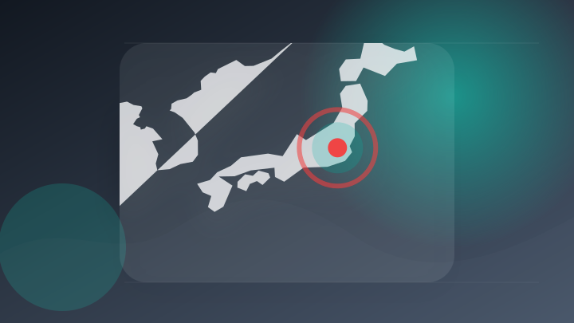
【SAK University】2027年度春入学 早期出願 総合型（第四期）の受付を開始 AI・ITを日本語で学び、英国学士号取得を目指す
【SAK University】2027年度春入学 早期出願 総合型（第四期）の受付を開始 AI・ITを日本語で学…
注目ポイント注目度 61点
AirTag対抗「Google Pixel Tag」の製品画像が流出。小判デザイン、カラーはとりあえず1色っぽい？
注目ポイント注目度 61点
Googleアカウント連携で100ポイント Google Play利用は3％還元、PayPayがキャンペーン
注目ポイント注目度 61点
政治
6 topics

令和８年熊本地震非常災害対策本部会議
注目ポイント注目度 100点
コメ余りでも倉庫ガラガラ 価格急落恐れ仕入れ抑制 政府は備蓄米の早期買い戻し断念
注目ポイント独立2媒体｜注目度 70点
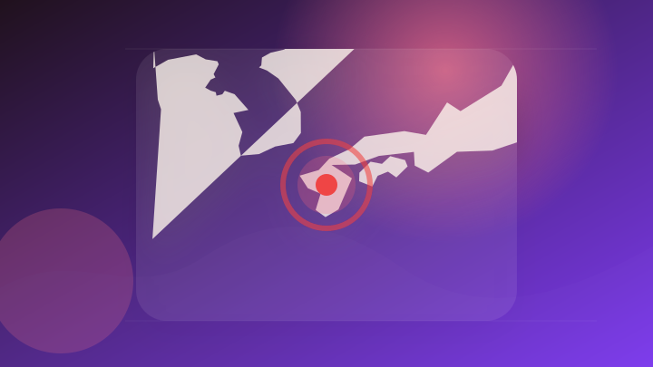
高市首相、３日に熊本の被災地訪問へ…首長との意見交換に加え避難所訪問も検討
注目ポイント注目度 70点
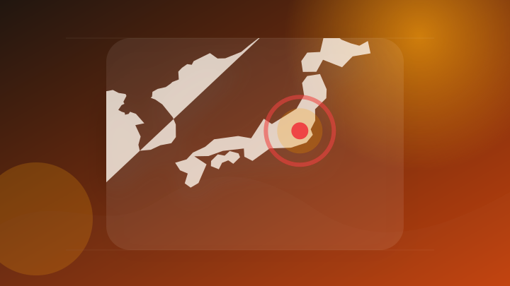
医療費不払い外国人の入国審査厳格化、白タク取り締まり強化 政府が外国人政策の進捗公表 「移民」と日本人
注目ポイント注目度 64点
検証：政府・日銀が為替介入 サプライズ、米連携
注目ポイント注目度 64点
高額療養費見直し 政府説明をデータでたどると？ ロジックに異論
注目ポイント注目度 64点
社会
6 topics
生活扶助費基準改定に関する最高裁判決を踏まえた生活保護費の追加給付
注目ポイント独立4媒体｜注目度 98点
車に追突した53歳の男を逮捕 30年ほど無免許か「免許合宿で合格できず、そのまま」
注目ポイント独立2媒体｜注目度 95点
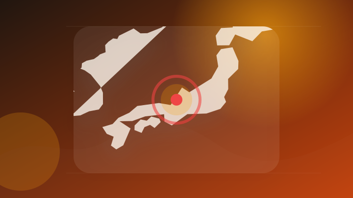
福井 高校で盗撮容疑で逮捕の教員 他にも盗撮か 再逮捕
注目ポイント注目度 70点
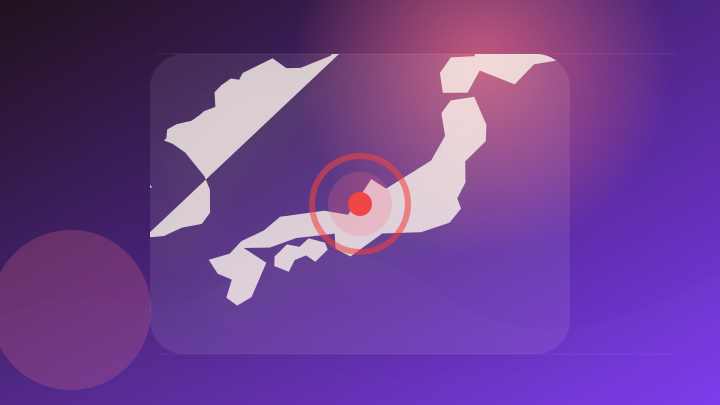
福井市の理容店で起きた強盗殺人未遂事件 散髪客の63歳無職男を逮捕 「殺すつもりはなかった」と容疑を一部否認
注目ポイント注目度 70点
男性切りつけて殺害 容疑で41歳おい逮捕 事件後に逃走し、川へ 岡山・倉敷
注目ポイント注目度 70点
62歳男性を刃物で殺害容疑、おいの41歳男を緊急逮捕 岡山県警 [岡山県]
注目ポイント注目度 70点
事件・事故
6 topics
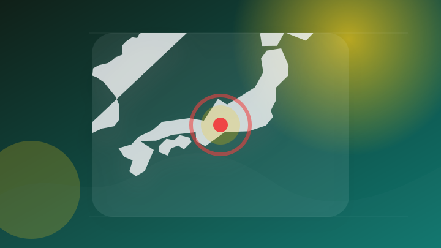
愛知 弥富 木曽川で60～70代とみられる男性が溺れ死亡
注目ポイント注目度 70点
カンボジア拠点の特殊詐欺事件 新たに１人逮捕 拠点の通訳か
注目ポイント注目度 70点
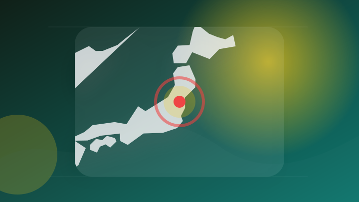
「けがはさせていない」容疑を否認 路上で知人女性の腕を引っ張りけがをさせた疑い 42歳の男逮捕 白河市・福島
注目ポイント注目度 70点
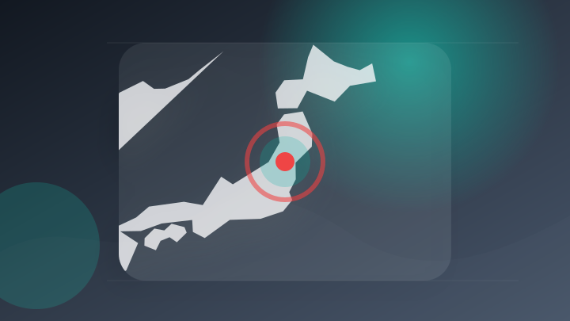
無免許運転で遊佐町の男(61)を逮捕 当て逃げ事件の捜査で判明(山形・酒田署）
注目ポイント注目度 70点
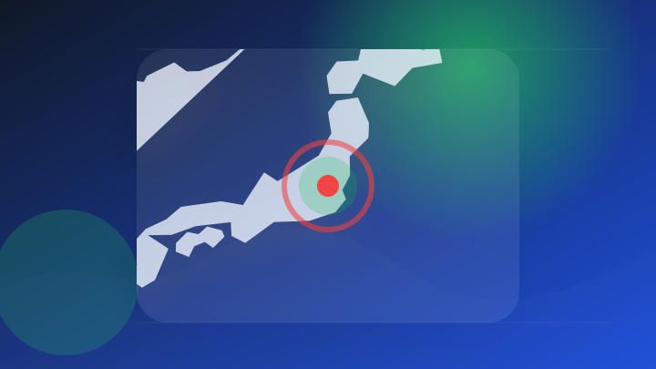
栃木県の公立中に侵入しリコーダーなど盗んだ疑い、75歳男を逮捕
注目ポイント注目度 67点
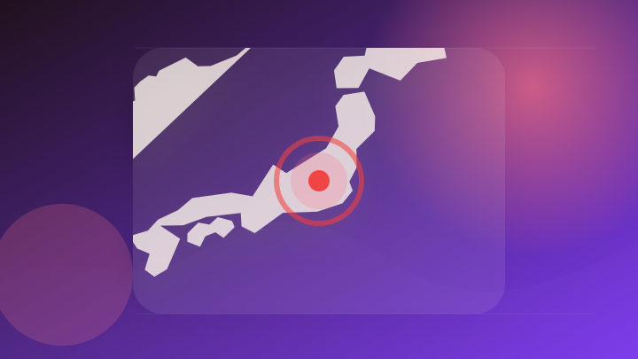
重体の60歳男性死亡 群馬・高崎市の交通事故
注目ポイント注目度 67点
災害
6 topics
新たに遠野市と奥州市に発表 レベル4土砂災害危険警報 対象は県内6市町に 花巻市は花北エリア13地区に避難指示 岩手 ※追記あり
新たに遠野市と奥州市に発表 レベル4土砂災害危険警報 対象は県内6市町に 花巻市は花北エリア13地区に避難指示 岩…
注目ポイント注目度 100点
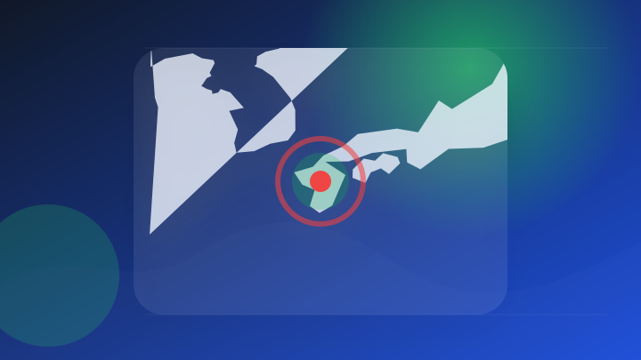
災害廃棄物 熊本県内各自治体の受け入れ状況【8月1日】
注目ポイント注目度 70点
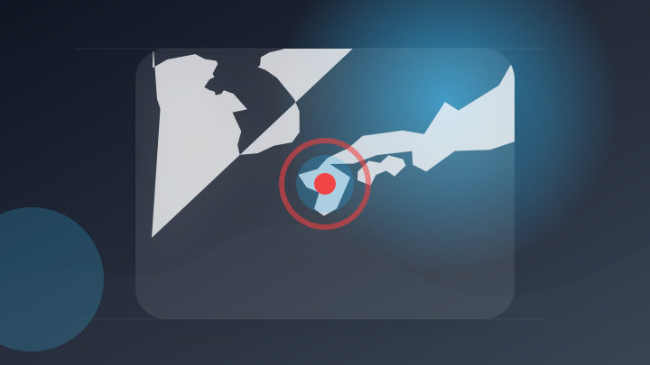
熊本地震 宇城市で災害ごみの回収始まる 住民が片付けに
注目ポイント注目度 70点
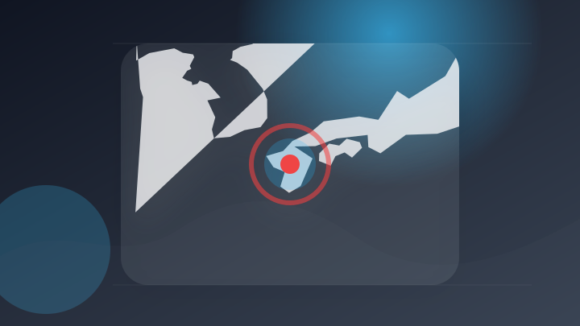
熊本地震の住宅被害、１日午後２時の時点で３４２９棟に
注目ポイント注目度 70点
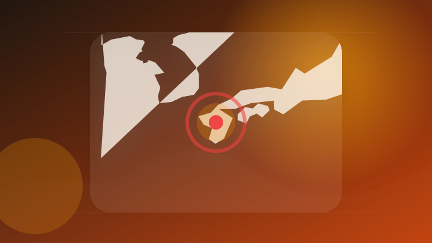
災害時用浄水器が熊本へ : ブログ : 広島市議会議員（佐伯区） 石田しょうこ
注目ポイント注目度 67点
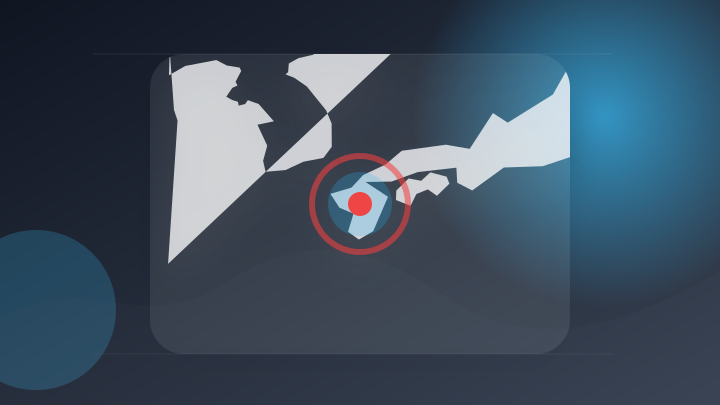
第31回ちばぎんカップ『令和8年熊本地震 災害支援 Jリーグ TEAM AS ONE募金』および『黙祷』の実施について
第31回ちばぎんカップ『令和8年熊本地震 災害支援 Jリーグ TEAM AS ONE募金』および『黙祷』の実施につ…
注目ポイント注目度 67点
ライフ
5 topics
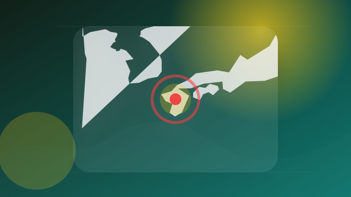
熊本地震 避難生活の長期化も見据え環境改善進める 政府
注目ポイント注目度 70点
「これまで通り走っても免許停止？」生活道路での自動車の法定速度が60キロ→30キロに引き下げ 9月1日から法令施行にドライバーは…
「これまで通り走っても免許停止？」生活道路での自動車の法定速度が60キロ→30キロに引き下げ 9月1日から法令施行…
注目ポイント注目度 64点
猛暑の中の断水生活 湧き水も止まった 89歳女性「風呂入りたい」 動画
注目ポイント注目度 64点
ライフスクエア五香で就労継続支援B型を開始しました
注目ポイント注目度 61点
最高裁判所の判決に基づく生活保護費の追加給付の実施に関して
注目ポイント注目度 61点
金融
3 topics
エンタメ
4 topics
「テニミュ」楽曲・演出を一部変更へ 音楽担当・Yu容疑者の逮捕受け対応「重ねてお詫び」（スポニチアネックス）
注目ポイント注目度 67点
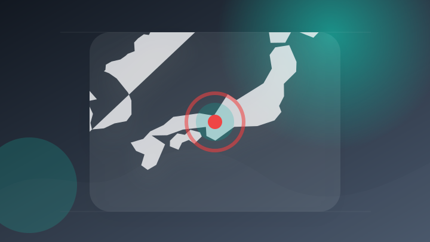
くるり主催「京都音楽博覧会」Homecomingsら第3弾出演アーティストを発表、大垣書店とのコラボも
注目ポイント独立2媒体｜注目度 66点
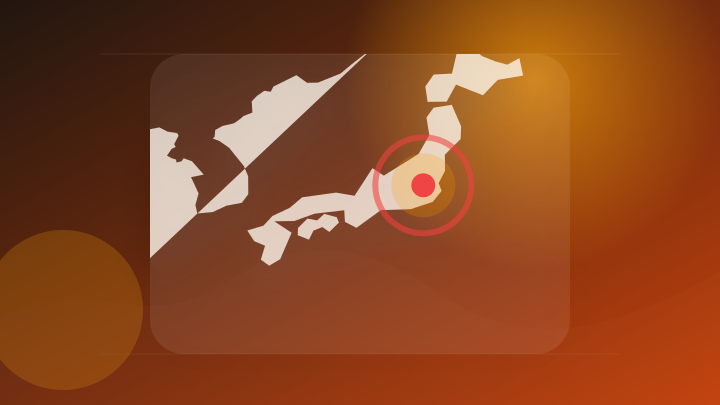
【日本コロムビア x TMIK】AI技術を活用した新規IP創出に向けた協業を発表次世代VSingerプロジェクト「En-gene」を起点に、新たな音楽エンタメを展開
【日本コロムビア x TMIK】AI技術を活用した新規IP創出に向けた協業を発表次世代VSingerプロジェクト「…
注目ポイント注目度 61点
くるり、主催音楽イベント"京都音楽博覧会2026"第3弾出演アーティストでHomecomings、Rimba、JAMES MACAULAY AND THE ANCIENT HIGHBALLS発表
くるり、主催音楽イベント"京都音楽博覧会2026"第3弾出演アーティストでHomecomings、Rimba、JA…
注目ポイント注目度 61点
経済
6 topics
来週の相場で注目すべき3つのポイント：主要企業決算、米ISM製造業・非製造業景況指数、米雇用統計(フィスコ)
注目ポイント独立2媒体｜注目度 66点
「高市財政」は成長頼みの賭け 多難な前途、真の「責任」果たす道は [高市早苗首相 自民党総裁]
注目ポイント注目度 64点
トヨタやスペースXなど大型企業の決算発表に注目今週のマーケットどう動く
注目ポイント注目度 61点
米主要企業決算 来週も発表ラッシュ スペースＸ、ＡＭＤ、キャタピラー
注目ポイント注目度 61点
【見通し】株式明日の戦略－AI関連が復活して4桁上昇、来週も注目企業の決算が目白押し
注目ポイント注目度 61点
NY株式：NYダウは276.97ドル高、堅調な経済指標や企業決算を好感
注目ポイント注目度 61点
スポーツ
2 topics
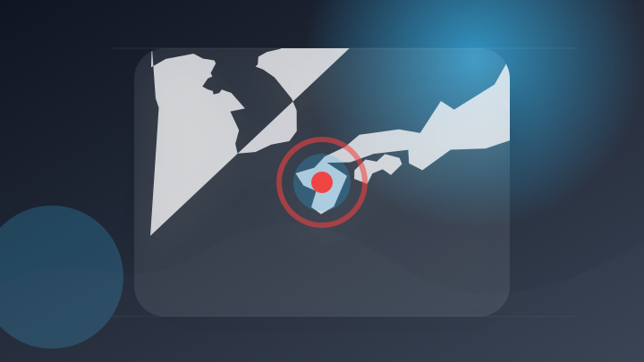
【甲子園】代表49校から中から「特A」付けなかった理由 熊本地震で被災した有明にも注目／展望（日刊スポーツ）
注目ポイント注目度 67点
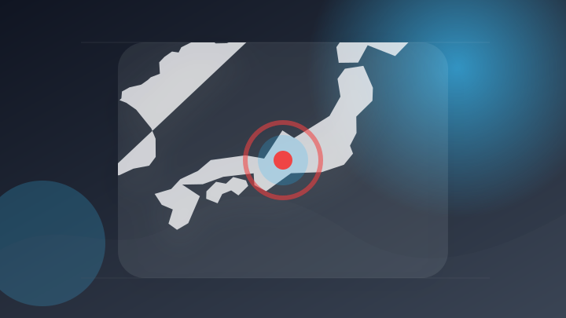
第31回 岐阜県サッカー選手権大会（兼 天皇杯 JFA 第106回全日本サッカー選手権大会岐阜県代表決定戦） 決勝 試合結果について – FC岐阜オフィシャルサイト
第31回 岐阜県サッカー選手権大会（兼 天皇杯 JFA 第106回全日本サッカー選手権大会岐阜県代表決定戦） 決勝…
注目ポイント独立3媒体｜注目度 65点
科学
3 topics
「数十分前の兆候」研究も 地震予知はどこまで進んだのか？学会会長「1年以内のスパンでの技術開発」「30年予測では『どこでも危ない』と言っているのと一緒」（ABEMA TIMES）
「数十分前の兆候」研究も 地震予知はどこまで進んだのか？学会会長「1年以内のスパンでの技術開発」「30年予測では『…
注目ポイント注目度 67点
「宇宙兄弟」×「プロジェクト・ヘイル・メアリー」 ムッタがカバーのコラボ版発売
注目ポイント注目度 61点
OpenAI、対象大学の研究者に「ChatGPT for Academic Researchers」を12カ月無料提供 今夏1万人、2027年までに10万人へ
OpenAI、対象大学の研究者に「ChatGPT for Academic Researchers」を12カ月無料…
注目ポイント注目度 61点
ゲーム
6 topics
【8月発売Switch/Switch2新作ゲーム】『FF10/10-2 HDリマスター』『エルデンリング Tarnished Edition』『メタルギアソリッド マスターコレクション Vol.2』など最新作を紹介！
【8月発売Switch/Switch2新作ゲーム】『FF10/10-2 HDリマスター』『エルデンリング Tarn…
注目ポイント注目度 64点
【8月発売PC新作ゲーム】『シュタゲ リブート』『ビースト・オブ・リンカネーション』『スターウォーズゼロ・カンパニー』など最新作を紹介！（ファミ通.com）
【8月発売PC新作ゲーム】『シュタゲ リブート』『ビースト・オブ・リンカネーション』『スターウォーズゼロ・カンパニ…
注目ポイント注目度 61点
最大8人、特殊能力を使える人狼系デスゲーム『Deadly Trick』早期アクセス開始。議論パートは「学級裁判」―協力できないなら裏切ってしまえ
最大8人、特殊能力を使える人狼系デスゲーム『Deadly Trick』早期アクセス開始。議論パートは「学級裁判」―…
注目ポイント注目度 61点
Nintendo Switch向け推理アドベンチャー『ミステリーの歩き方2 人魚伝説殺人事件』9月17日発売へ。隠しシナリオではまさかの「ガチャピン＆ムック」が登場
Nintendo Switch向け推理アドベンチャー『ミステリーの歩き方2 人魚伝説殺人事件』9月17日発売へ。隠…
注目ポイント注目度 61点
エバースがストリートファイター6に大絶叫！ YouTube新番組「Nintendo Switch 2 でゲームやろうぜ！」7月31日より配信開始
エバースがストリートファイター6に大絶叫！ YouTube新番組「Nintendo Switch 2 でゲームやろ…
注目ポイント注目度 61点
ソニーストア、PlayStationゲーム ディスク版発売終了に向けて重要なお知らせが登場。PS5用 ディスクドライブCFI-ZDD1J 製品・購入ページに掲載。 - ソニーが基本的に好き。
ソニーストア、PlayStationゲーム ディスク版発売終了に向けて重要なお知らせが登場。PS5用 ディスクドラ…
注目ポイント注目度 61点